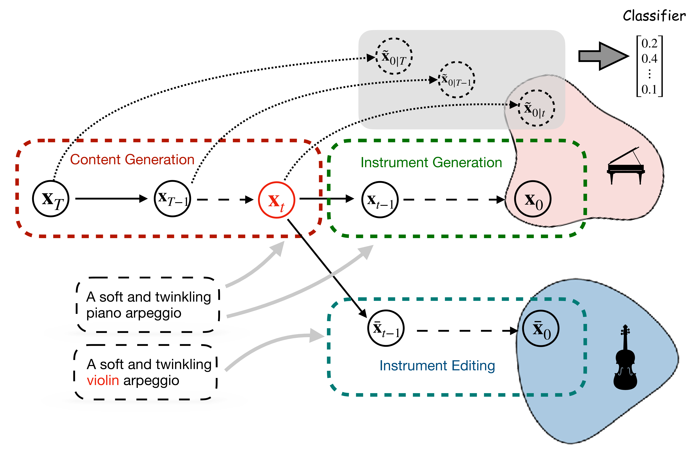

Teysir Baoueb, Xiaoyu Bie, Gaël Richard
Abstract: Breakthroughs in text-to-music generation models are transforming the creative landscape, equipping musicians with innovative tools for composition and experimentation like never before. However, controlling the generation process to achieve a specific desired outcome remains a significant challenge. Even a minor change in the text prompt, combined with the same random seed, can drastically alter the generated piece. In this paper, we explore the application of existing text-to-music diffusion models for instrument editing. Specifically, for an existing audio track, we aim to leverage a pretrained text-to-music diffusion model to edit the instrument while preserving the underlying content. Based on the insight that the model first focuses on the overall structure or content of the audio, then adds instrument information, and finally refines the quality, we show that selecting a well-chosen intermediate timestep, identified through an instrument classifier, yields a balance between preserving the original piece's content and achieving the desired timbre. Our method does not require additional training of the text-to-music diffusion model, nor does it compromise the generation process's speed.

Contents
- I. Illustration of the Generation Process
- II. Comparison with the Different Variations of Diff-TONE
- III. Comparison of the Different Approaches for Timestep Selection
- IV. Comparison with the Baseline Methods
- V. Comparison with MusicMagus
- VI. More Samples
- References
I. Illustration of the Generation Process
This sample corresponds to the example treated in Section 4.1 of the paper. It showcases the effect of changing the instrument name in the prompt at different timesteps of a 50-step inference process. As discussed in the paper, if we swap the instrument name in the prompt during the early stages of the sampling process (t=39), the content is not fully preserved. On the other hand, if we do so during the later stages of inference (t=9), the timbre information has already been integrated into the latent, making it too late to modify at this point. By selecting an appropriate timestep (t=21), the desired outcome is achieved: playing the original content with the target instrument.
Original Audio  |
t=39 (Content changes)  |
t=21 (Optimal timestep)  |
t=9 (Timbre cannot be altered)  |
II. Comparison with the Different Variations of Diff-TONE
we present here the results of our method across the different variations.| Prompt | Editing | Original Audio | Diff-TONE Teacher | Diff-TONE-2 | Diff-TONE-2-Continuous | Diff-TONE-2-stochastic | Diff-TONE-11 | Diff-TONE-11-Continuous | Diff-TONE-11-stochastic |
|---|---|---|---|---|---|---|---|---|---|
III. Comparison of the Different Approaches for Timestep Selection
In this section, we compare the different methods for selecting the timestep at which the prompt is changed, as outlined in our paper: Diff-TONE, Diff-Midpoint, where the prompt change occurs precisely at the midpoint of the sampling process, and Diff-Random, where the change happens at a random point during generation. For this section and the ones that follow, we use Diff-TONE-11 as a reference point.
| Prompt | Editing | Original Audio | Diff-TONE | Diff-Midpoint | Diff-Random |
|---|---|---|---|---|---|
IV. Comparison with the Baseline Methods
We compare our approach to the Audio2Audio method from the Stable Audio 2.0 [1] paper (Section 4.6) and Zeta [2].
| Prompt | Editing | Original Audio |
Diff-TONE | Zeta | Audio2Audio |
|---|---|---|---|---|---|
V. Comparison with MusicMagus
In this section, we compare our method, Diff-TONE, with MusicMagus [3]. It is important to note that the original audio inputs differ between the two approaches: MusicMagus is built upon AudioLDM 2 [4], while our method is based on Stable Audio Open [2]. Additionally, for MusicMagus, we retained the original hyperparameter settings, including 100 diffusion steps, whereas our approach uses only 50 diffusion steps.
| Prompt | Editing | Diff-TONE (Original Audio) |
Diff-TONE (Edited Audio) |
MusicMagus (Original Audio) |
MusicMagus (Edited Audio) |
|---|---|---|---|---|---|
VI. More Samples
| Prompt | Editing | Original Audio | Diff-TONE |
|---|---|---|---|
References
[1] Zach Evans, Julian D. Parker, CJ Carr, Zack Zukowski, Josiah Taylor, and Jordi Pons. Long-form music generation with latent diffusion. In Proc. ISMIR, 2024.
[2] Hila Manor, Tomer Michaeli. Zero-Shot Unsupervised and Text-Based Audio Editing Using DDPM Inversion. In Proc. ICML, 2024.
[3] Yixiao Zhang, Yukara Ikemiya, Gus Xia, Naoki Murata, Marco A. Martínez-Ramírez, Wei-Hsiang Liao, Yuki Mitsufuji, and Simon Dixon. MusicMagus: Zero-Shot Text-to-Music Editing via Diffusion Models. In Proc. IJCAI, 2024.
[4] Haohe Liu, Qiao Tian, Yi Yuan, Xubo Liu, Xinhao Mei, Qiuqiang Kong, Yuping Wang, Wenwu Wang, Yuxuan Wang, and Mark D Plumbley. AudioLDM 2: Learning holistic audio generation with self-supervised pretraining. IEEE/ACM Trans. Audio, Speech and Lang. Proc. 32, 2024.